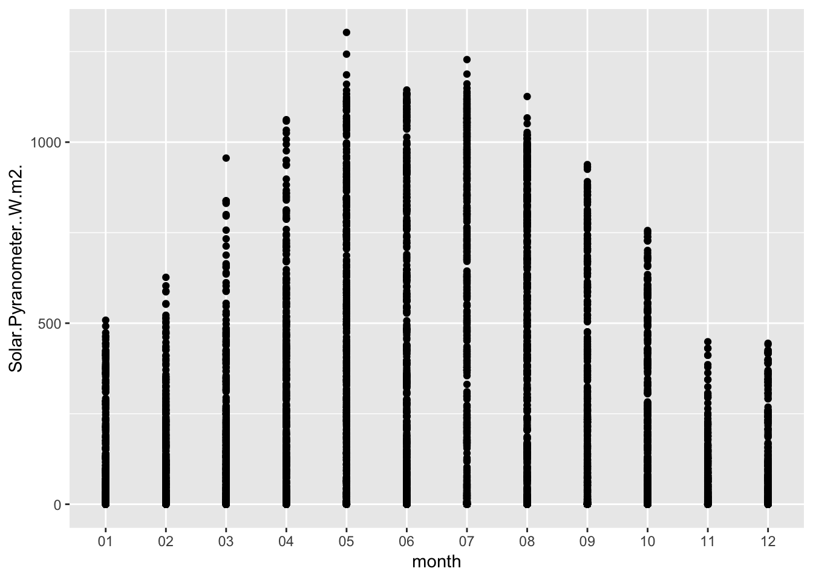
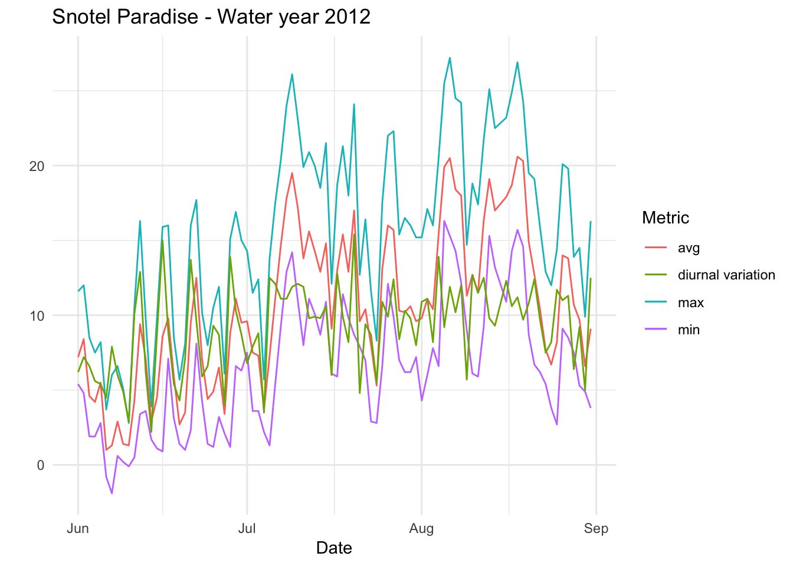
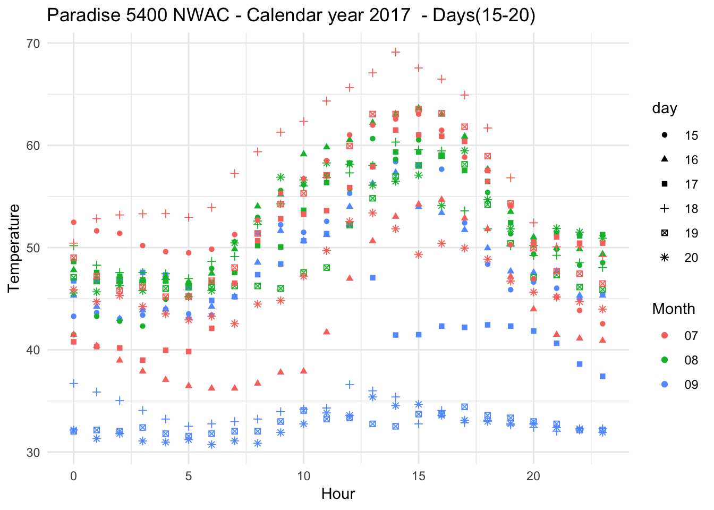

Chapter 8 Journal
Daily lab notes
library(ggplot2)
library(tidyverse)## ── Attaching packages ───────────────────────────────────────────── tidyverse 1.2.1 ──## ✔ tibble 1.4.2 ✔ purrr 0.2.4
## ✔ tidyr 0.8.0 ✔ dplyr 0.7.4
## ✔ readr 1.1.1 ✔ stringr 1.3.1
## ✔ tibble 1.4.2 ✔ forcats 0.3.0## ── Conflicts ──────────────────────────────────────────────── tidyverse_conflicts() ──
## ✖ dplyr::filter() masks stats::filter()
## ✖ dplyr::lag() masks stats::lag()library(lubridate)##
## Attaching package: 'lubridate'## The following object is masked from 'package:base':
##
## date8.1 4-12-2018
8.1.1 ekoseminar
Urban ecosystems are undergoing evolution at a much faster pace than one would imagine. Thinking about mutation which introduce allele frequency key to heritable diversity ?
8.1.2 meeting with jhrl
Certain species do flower early - confirmed by JHRL. The poster we presented does make sense.
8.1.3 ekoclimate
The energy budget of the area increases if the type of the cover changes, i.e if it changes from deciduous forest to crop/grassland then the net Long Wave radiation(flux?) increases. Long wave is the one that is reflected, so the area with a grass will absorb more heat through the day , and emilt radiation during the night? (More cooling ?). So, should we see more diurnal variation in crop/grasslands than forests ?. How should one charaterize the total energy flux on grasslands vs forests?
Shortware is the incoming radiation - i.e having a shorter wavelength, and when is reflected, it becomes long wave radiation. The longwave radiation emitted out is calculated by multipying Stephan Boltzman constant multiplied by epsilion(emissivity) and Temperature^4(Temperature of the object).
8.1.4 trenchR
Thermal conductance wrt to animals define the amount of heat which can escape out of animals. It depends on the difference between the animal and the outside temperature and you multipy by the thickness(lambda) and a proportion of the surface area(true area exposed to solar radiation).
Surace area to calculate the exposure is related to the exposed area - tricky as animals come in all shapes, mostly cylindrical with a sphere head if land based.
8.2 4-13-2018
8.3 4-20-2008
Heat transfer coefficient for Lizards. It is linear with windspeeed, and slope changes when the lizard is parallel or transverse
8.4 4-23-2008
Get diurnal variation across 5 sites at Mt Rainier
#Load a file
Paradise_2017<- read.csv('./data/ParadiseWind_5380_feet_2017.csv')
CampMuir_2017<- read.csv('./data/CampMuir_10110_feet_2017.csv')
Sunriseupper_2017<- read.csv('./data/SunriseUpper_6880_feet_2017.csv')
Paradise_2017$date <- as.Date(Paradise_2017$Date.Time..PST., "%Y-%m-%d")
Paradise_2017$hr <-strftime(Paradise_2017$Date.Time..PST.,'%H')
Paradise_2017$min <-strftime(Paradise_2017$Date.Time..PST.,'%M')
Paradise_2017$month <- strftime(Paradise_2017$Date.Time..PST.,'%m')
CampMuir_2017$date <- as.Date(CampMuir_2017$Date.Time..PST., "%Y-%m-%d")
CampMuir_2017$hr <-strftime(CampMuir_2017$Date.Time..PST.,'%H')
CampMuir_2017$min <-strftime(CampMuir_2017$Date.Time..PST.,'%M')
CampMuir_2017$month <-strftime(CampMuir_2017$Date.Time..PST.,'%m')
Sunriseupper_2017$date <- as.Date(Sunriseupper_2017$Date.Time..PST., "%Y-%m-%d")
Sunriseupper_2017$hr <-strftime(Sunriseupper_2017$Date.Time..PST.,'%H')
Sunriseupper_2017$min <-strftime(Sunriseupper_2017$Date.Time..PST.,'%M')
Sunriseupper_2017$month <- strftime(Sunriseupper_2017$Date.Time..PST.,'%m')
str(Paradise_2017)## 'data.frame': 8760 obs. of 11 variables:
## $ Date.Time..PST. : Factor w/ 8760 levels "2017-01-01 00:00",..: 8760 8759 8758 8757 8756 8755 8754 8753 8752 8751 ...
## $ Battery.Voltage..v. : num 13 13 12.4 12.9 12.9 ...
## $ Wind.Speed.Minimum..mph.: num 0 0 0 0.71 1.42 2.13 0 0 0 0.71 ...
## $ Wind.Speed.Average..mph.: num 1.68 1.68 1.6 2.23 2.76 ...
## $ Wind.Speed.Maximum..mph.: num 3.55 3.55 3.55 3.55 3.55 4.26 3.55 3.55 4.26 6.39 ...
## $ Wind.Direction..deg.. : num 21.04 6.89 19.41 26.65 16.74 ...
## $ Solar.Pyranometer..W.m2.: num 0 0 0 0 0 ...
## $ date : Date, format: "2017-12-31" "2017-12-31" ...
## $ hr : chr "00" "00" "00" "00" ...
## $ min : chr "00" "00" "00" "00" ...
## $ month : chr "12" "12" "12" "12" ...Paradise_2017 %>% ggplot(aes(date,Solar.Pyranometer..W.m2.)) +geom_point() + stat_smooth(se = TRUE) + ggtitle("Solar Radiation at Paradise(5380 ft)")+ xlab("Date") + ylab("Solar Irradiance(W/m^2)")## `geom_smooth()` using method = 'gam' and formula 'y ~ s(x, bs = "cs")'
CampMuir_2017 %>% ggplot(aes(date,Solar.Pyranometer..W.m2.)) + geom_point() + stat_smooth(se = TRUE) + ggtitle("Solar Radiation at CampMuir(10110 ft)")+ xlab("Date") + ylab("Solar Irradiance(W/m^2)")## `geom_smooth()` using method = 'gam' and formula 'y ~ s(x, bs = "cs")'
Sunriseupper_2017 %>% ggplot(aes(date,Solar.Pyranometer..W.m2.)) + geom_point() + stat_smooth(se = TRUE) + ggtitle("Solar Radiation at Sunrise-Upper(6880 ft)")+ xlab("Date") + ylab("Solar Irradiance(W/m^2)")## `geom_smooth()` using method = 'gam' and formula 'y ~ s(x, bs = "cs")'
Feedback
Better to do it houry so that daily patterns do confound it. So, now we have hourly solar radiation across all the sites.
## 4-28-2008
#
ggplot(Paradise_2017, aes(hr,Solar.Pyranometer..W.m2.))+
stat_boxplot( aes(hr,Solar.Pyranometer..W.m2.),
geom='errorbar', linetype=1, width=0.5)+ #whiskers
geom_boxplot( aes(hr,Solar.Pyranometer..W.m2.),outlier.shape=1) +
stat_summary(fun.y=mean, geom="point", size=2) +
stat_summary(fun.data = mean_se, geom = "errorbar")
annotate("text",x=20,y=55,label="wassup!" , family="xkcd"
)## mapping: x = ~x, y = ~y
## geom_text: na.rm = FALSE
## stat_identity: na.rm = FALSE
## position_identity## 4-28-2008
#
ggplot(CampMuir_2017, aes(hr,Solar.Pyranometer..W.m2.))+
stat_boxplot( aes(hr,Solar.Pyranometer..W.m2.),
geom='errorbar', linetype=1, width=0.5)+ #whiskers
geom_boxplot( aes(hr,Solar.Pyranometer..W.m2.),outlier.shape=1) +
stat_summary(fun.y=mean, geom="point", size=2) +
stat_summary(fun.data = mean_se, geom = "errorbar")
It does confirm that higher the sites, the solar radiation is slightly higher.
8.5 4-29-2008
Lets assume that solar radiation is infact more relevant at higher elevations, so snowmelt would be at a faster rate at higher elevations. Is snowmelt even at all the elevations ? Intuitively no as we often see that peaks hold-on to snow longer. (Just aside discussion).
Here, the goal is to see if there is a difference in radiation recieved at the sites. Reasoning being if the solar radiation recorded is different, that would mean differemt growing degree days. Lets look for June, July and August(JJA Summer). Summer solstice - June 21st.
## 4-29-2008
library(gridExtra)##
## Attaching package: 'gridExtra'## The following object is masked from 'package:dplyr':
##
## combine#
g1 <- Paradise_2017 %>% filter(month %in% c('06','07','08')) %>% ggplot( aes(hr,Solar.Pyranometer..W.m2.)) + geom_boxplot() +
stat_summary(colour = "red",size=0.5) + theme_classic() +theme(axis.text.x = element_text(angle = 90, hjust = 1)) + xlab("Hour") + ggtitle("Paradise(5k ft) ")
g2 <- CampMuir_2017 %>% filter(month %in% c('06','07','08')) %>% ggplot( aes(hr,Solar.Pyranometer..W.m2.)) + geom_boxplot() +
stat_summary(colour = "red",size=0.5) + theme_classic() +theme(axis.text.x = element_text(angle = 90, hjust = 1)) + xlab("Hour") + ggtitle("Camp Muir(10k ft) ")
grid.arrange(g1, g2,ncol=2, top = "JJA - Mean Hourly Solar Radiation at 2 elevations")## No summary function supplied, defaulting to `mean_se()## No summary function supplied, defaulting to `mean_se()
## 4-29-2008
library(gridExtra)
#
g3 <- Paradise_2017 %>% filter(month %in% c('06')) %>% ggplot( aes(hr,Solar.Pyranometer..W.m2.)) + geom_boxplot() +
theme_classic() +theme(axis.text.x = element_text(angle = 90, hjust = 1)) + xlab("Hour") + ggtitle("Paradise(5k ft) ")
g4 <- CampMuir_2017 %>% filter(month %in% c('06')) %>% ggplot( aes(hr,Solar.Pyranometer..W.m2.)) + geom_boxplot() +
theme_classic() +theme(axis.text.x = element_text(angle = 90, hjust = 1)) + xlab("Hour") + ggtitle("Camp Muir(10k ft) ")
grid.arrange(g3, g4,ncol=2, top = "June - Max Hourly Solar Radiation at 2 elevations")
#ggplotly()Lets check the daily max for each day in summer(JJA)
## 4-29-2008
library(gridExtra)
#
g5 <- Paradise_2017 %>% filter(month %in% c('06','07','08')) %>% dplyr::group_by(date) %>%
dplyr::summarise(maxSol = max(Solar.Pyranometer..W.m2.)) %>%
ggplot( aes(date,maxSol)) + geom_point() + geom_line() +
theme_classic() +theme(axis.text.x = element_text(angle = 90, hjust = 1)) + xlab("Date") + ggtitle("Paradise(5k ft) ")
g6 <- CampMuir_2017 %>% filter(month %in% c('06','07','08')) %>% dplyr::group_by(date) %>%
dplyr::summarise(maxSol = max(Solar.Pyranometer..W.m2.)) %>%
ggplot( aes(date,maxSol)) + geom_point() + geom_line() +
theme_classic() +theme(axis.text.x = element_text(angle = 90, hjust = 1)) + xlab("Date") + ggtitle("Camp Muir(10k ft) ")
grid.arrange(g5, g6,ncol=2, top = "JJA - Daily Max Solar Radiation at 2 elevations")
#ggplotly()Compare wind and solar at two sites
## 4-29-2008
library(gridExtra)
#
g5 <- Paradise_2017 %>% filter(month %in% c('06','07','08')) %>% dplyr::group_by(date) %>%
dplyr::summarise(maxSol = max(Solar.Pyranometer..W.m2.),maxWind = max(Wind.Speed.Average..mph.)) %>%
ggplot() + geom_line(aes(date,log(maxSol),color='log Solar(W/m^2)') ) + geom_line(aes(date,maxWind,color='Wind(m/h)')) +
theme_classic() +theme(axis.text.x = element_text(angle = 90, hjust = 1)) + xlab("Date") + ylab("") + ggtitle("Paradise(5k ft) ") + scale_color_discrete(name="Variable")
g6 <- CampMuir_2017 %>% filter(month %in% c('06','07','08')) %>% dplyr::group_by(date) %>%
dplyr::summarise(maxSol = max(Solar.Pyranometer..W.m2.),maxWind = max(Wind.Speed.Average..mph.)) %>%
ggplot() + geom_line(aes(date,log(maxSol),color='log Solar(W/m^2)') ) + geom_line(aes(date,maxWind,color='Wind(m/h)')) +
theme_classic() +theme(axis.text.x = element_text(angle = 90, hjust = 1)) + xlab("Date") + ylab("") + ggtitle("Camp Muir(10k ft) ") + scale_color_discrete(name="Variable")
grid.arrange(g5, g6,ncol=2, top = "JJA - Daily Max Solar and Max Wind(Avg) at 2 elevations")
#ggplotly()8.6 5-21-2018
Wrangle the microclimate data
## 5-21-2018
mclim_2018<- read.csv('./data/DATALOG.5.15.2018.csv')
#ggplotly()Look at the data
## 5-21-2018
str(mclim_2018)## 'data.frame': 326489 obs. of 4 variables:
## $ X2018.5.8.16.35.01: Factor w/ 73277 levels "2018/5/10 0:00:03",..: 60336 60336 60336 60336 60336 60337 60338 60338 60338 60338 ...
## $ X28CF6F0400008059 : Factor w/ 6 levels "287F5B04000080C5",..: 1 5 6 4 3 2 1 5 6 4 ...
## $ X14.31 : num 14.8 14.4 14.8 14.3 14.1 ...
## $ X4.14 : num 4.14 4.14 4.14 4.14 4.14 4.14 4.14 4.14 4.14 4.14 ...names(mclim_2018) <- c('time','nodeid','temp','batt')
mclim_2018$time <- as.POSIXct(mclim_2018$time, "%Y/%m/%d %H:%M:%S")Add Hour, month and day
## 5-21-2018
mclim_2018$hr <- hour(mclim_2018$time)
mclim_2018$day <- day(mclim_2018$time)
mclim_2018$month<- month(mclim_2018$time)Basic plot (May 10th)
## 5-21-2018
mclim_2018 %>% filter(day(time) %in% '10') %>%
ggplot( aes(time,temp,color = nodeid)) + geom_line() + theme_minimal()
#ggplotly()Whole week
## 5-21-2018
mclim_2018 %>%
ggplot( aes(time,temp,color = nodeid)) + geom_line()
#ggplotly()Add heights (Roghly .25 m apart)
mclim_2018$height <- 0
mclim_2018[mclim_2018$nodeid=='28FF80E24316043F' ,]$height <- 0.25
mclim_2018[mclim_2018$nodeid=='28FF7331441603A7' ,]$height <- 0.5
mclim_2018[mclim_2018$nodeid=='287F5B04000080C5' ,]$height <- 0.75
mclim_2018[mclim_2018$nodeid=='28FFB1C2501604A8' ,]$height <- 1
mclim_2018[mclim_2018$nodeid=='28CF6F0400008059' ,]$height <-1.25
mclim_2018[mclim_2018$nodeid=='28FF5B69501604F2' ,]$height <- 1.5Basic plot (May 10th) - By height
## 5-21-2018
mclim_2018 %>% filter(day(time) %in% '10') %>%
ggplot( aes(time,temp,color = factor(height))) + geom_line() + theme_minimal()
#ggplotly()Add simulated wind profile
mclim_2018$ws <- 0
mclim_2018[mclim_2018$nodeid=='287F5B04000080C5',]$ws <- 4.34
mclim_2018[mclim_2018$nodeid=='28FF80E24316043F' ,]$ws <- 2.02
mclim_2018[mclim_2018$nodeid=='28FFB1C2501604A8' ,]$ws <- 5.20
mclim_2018[mclim_2018$nodeid=='28FF7331441603A7' ,]$ws <- 3.45
mclim_2018[mclim_2018$nodeid=='28FF5B69501604F2' ,]$ws <- 7.56
mclim_2018[mclim_2018$nodeid=='28CF6F0400008059' ,]$ws <-6.54Redo the plot by height
## 5-21-2018
mclim_2018 %>% filter(day(time) %in% '10', height %in% c(0.25,1)) %>%
ggplot( aes(time,temp,color = factor(height))) + geom_line() + theme_minimal()
Redo the plot by height for Wind Speed
## 5-21-2018
mclim_2018 %>% filter(day(time) %in% '10', height %in% c(0.25,0.5,0.75,1)) %>%
ggplot( aes(time,ws,color = factor(height))) + geom_line() + theme_minimal()
Calculate (Wind speed at any height = U_star/K*log(Z/Z0))
Calculate zero plane displcement
#TODO - Do by each hour
zeroDM<- lm(log(mclim_2018$height) ~ mclim_2018$ws)
zD <- exp(zeroDM$coeff[1])
#.16Calculate roughness and Z*
#With zero plane dispacement
sRM<- lm(mclim_2018$ws ~ log(mclim_2018$height-zD))
srIntercept <- sRM$coeff[1]
srSlope <- sRM$coeff[2]
K=0.4 # Von Karman constant
z0<- exp(-srIntercept/srSlope) #0.04
U_star<- srSlope*KRepeat this for each site ## 7-21-2018
#With zero plane dispacement
library(rgdal) #this package is necessary to import the .asc file in R.## Loading required package: sp## rgdal: version: 1.2-20, (SVN revision 725)
## Geospatial Data Abstraction Library extensions to R successfully loaded
## Loaded GDAL runtime: GDAL 2.1.3, released 2017/20/01
## Path to GDAL shared files: /Library/Frameworks/R.framework/Versions/3.5/Resources/library/rgdal/gdal
## GDAL binary built with GEOS: FALSE
## Loaded PROJ.4 runtime: Rel. 4.9.3, 15 August 2016, [PJ_VERSION: 493]
## Path to PROJ.4 shared files: /Library/Frameworks/R.framework/Versions/3.5/Resources/library/rgdal/proj
## Linking to sp version: 1.2-7library(rasterVis) #this package has the function which allows the 3D plotting.## Loading required package: raster##
## Attaching package: 'raster'## The following object is masked from 'package:dplyr':
##
## select## The following object is masked from 'package:tidyr':
##
## extract## Loading required package: lattice## Loading required package: latticeExtra## Loading required package: RColorBrewer##
## Attaching package: 'latticeExtra'## The following object is masked from 'package:ggplot2':
##
## layer#set the path where the file is, and import it into R.
r= raster(paste("./data/rainier_2012_dtm_5_hs.tif", sep=""))
#visualize the raster in 3D
plot(r,lit=TRUE)
library(tidyverse)
fs <- list.files(path="./data", pattern = "rainier*", full.names = TRUE)
r1 <- raster(fs[1])
r1[] <- 1:ncell(r1)
r2 <- raster(fs[2])
r3 <- raster(fs[3])
r4 <- raster(fs[4])
res(r2) <- c(xres(r1), yres(r1))
r2[] <- 1:ncell(r2)
r3[] <- 1:ncell(r3)
r4[] <- 1:ncell(r4)
x <- list(r1, r2,r3,r4)
x$filename <- 'test.tif'
x$overwrite <- TRUE
m <- do.call(merge, x)Combining multiple rasters into one single file.
fs <- list.files(path="./data", pattern = "rainier_2007_*", full.names = TRUE)
library(raster)
r1 <- raster(fs[1])
r2 <- raster(fs[2])
r3 <- raster(fs[3])
r4 <- raster(fs[4])
r5 <- raster(fs[5])
r6 <- raster(fs[6])
r7 <- raster(fs[7])
r8 <- raster(fs[8])
r9 <- raster(fs[9])
r10 <- raster(fs[10])
r11 <- raster(fs[11])
r12 <- raster(fs[12])
r13 <- raster(fs[13])
r14 <- raster(fs[14])
r15 <- raster(fs[15])
r16 <- raster(fs[16])
r17 <- raster(fs[17])
# if you have a list of Raster objects, you can use do.call
x <- list(r1, r2, r3,r4,r5,r6,r7,r8,r9,r10,r11,r12,r13,r14,r15,r16,r17)
names(x)[1:2] <- c('x', 'y')
x$fun <- mean
x$na.rm <- TRUE
#y <- do.call(mosaic, x)
#writeRaster(y, "./data/combined_mtr.TIF")8.7 7-25-2018
Check the diurnal variation for summer, using Paradise as a proxy
Paradise_2017 %>% group_by(date,month,hr) %>% ggplot(aes(month,Solar.Pyranometer..W.m2.)) + geom_point() 
#.16Use SNOTEL data from Paradise(Latitude: 46.78 Longitude: -121.74)
Check the diurnal variation for summer, using Paradise as a proxy
Paradise_Snotel_2013<- read.csv('./data/679_STAND_WATERYEAR=2013.csv')
Paradise_Snotel_2013$date <- as.Date(Paradise_Snotel_2013$Date, "%Y-%m-%d")
Paradise_Snotel_2013$month <- strftime(Paradise_Snotel_2013$Date,'%m')
Paradise_Snotel_2012<- read.csv('./data/679_STAND_WATERYEAR=2012.csv')
Paradise_Snotel_2012$date <- as.Date(Paradise_Snotel_2012$Date, "%Y-%m-%d")
Paradise_Snotel_2012$month <- strftime(Paradise_Snotel_2012$Date,'%m')
Paradise_Snotel_2011<- read.csv('./data/679_STAND_WATERYEAR=2011.csv')
Paradise_Snotel_2011$date <- as.Date(Paradise_Snotel_2011$Date, "%Y-%m-%d")
Paradise_Snotel_2011$month <- strftime(Paradise_Snotel_2011$Date,'%m')
Paradise_Snotel_2013 %>% group_by(date,month) %>% mutate(diva=TMAX.D.1..degC.-TMIN.D.1..degC.)%>% ggplot() + geom_line(aes(date,TMIN.D.1..degC.,colour='min')) +geom_line(aes(date,TMAX.D.1..degC.,colour='max')) +geom_line(aes(date,diva,colour='diurnal variation'))+ theme_minimal()
#.16Only Summer
Paradise_Snotel_2013 %>% group_by(date,month) %>% filter(as.numeric(month) %in% c(6,7,8)) %>% mutate(diva=TMAX.D.1..degC.-TMIN.D.1..degC.)%>% ggplot() + geom_line(aes(date,TMIN.D.1..degC.,colour='min')) +geom_line(aes(date,TMAX.D.1..degC.,colour='max'))+geom_line(aes(date,TAVG.D.1..degC.,colour='avg')) +geom_line(aes(date,diva,colour='diurnal variation'))+ theme_minimal() +xlab("Date") + ylab("") + ggtitle("Snotel Paradise - Water year 2013 ") + scale_color_discrete(name="Metric")
#.16For 2012
Paradise_Snotel_2012 %>% group_by(date,month) %>% filter(as.numeric(month) %in% c(6,7,8) & TMIN.D.1..degC. != -99.9) %>% mutate(diva=TMAX.D.1..degC.-TMIN.D.1..degC.)%>% ggplot() + geom_line(aes(date,TMIN.D.1..degC.,colour='min')) +geom_line(aes(date,TMAX.D.1..degC.,colour='max'))+geom_line(aes(date,TAVG.D.1..degC.,colour='avg')) +geom_line(aes(date,diva,colour='diurnal variation'))+ theme_minimal() +xlab("Date") + ylab("") + ggtitle("Snotel Paradise - Water year 2012 ") + scale_color_discrete(name="Metric")
#.16For 2011
Paradise_Snotel_2011 %>% group_by(date,month) %>% filter(as.numeric(month) %in% c(6,7,8)) %>% mutate(diva=TMAX.D.1..degC.-TMIN.D.1..degC.)%>% ggplot() + geom_line(aes(date,TMIN.D.1..degC.,colour='min')) +geom_line(aes(date,TMAX.D.1..degC.,colour='max'))+geom_line(aes(date,TAVG.D.1..degC.,colour='avg')) +geom_line(aes(date,diva,colour='diurnal variation'))+ theme_minimal() +xlab("Date") + ylab("") + ggtitle("Snotel Paradise - Water year 2011 ") + scale_color_discrete(name="Metric")
#.168.8 7-26-2018
Lets look at the diurnal variation for three months, need to switch to NWAC as Snotel does not provide hourly breakdown
Paradise_5400_2017<- read.csv('./data/Paradise_5400_feet_2017.csv')
Paradise_5400_2016<- read.csv('./data/Paradise_5400_feet_2016.csv')
Paradise_5400_2015<- read.csv('./data/Paradise_5400_feet_2015.csv')
Paradise_5400_2017$date <- as.Date(Paradise_5400_2017$Date.Time..PST., "%Y-%m-%d")
Paradise_5400_2017$datetime <- as.Date(Paradise_5400_2017$Date.Time..PST., "%Y-%m-%d %H:%M")
library(lubridate)
library(gridExtra)
Paradise_5400_2017$hr <-lubridate::hour(lubridate::as_datetime(Paradise_5400_2017$Date.Time..PST.))
Paradise_5400_2017$min <-lubridate::minute(lubridate::as_datetime(Paradise_5400_2017$Date.Time..PST.))
Paradise_5400_2017$month <- strftime(Paradise_5400_2017$Date.Time..PST.,'%m')
Paradise_5400_2017$day <-strftime(Paradise_5400_2017$Date.Time..PST.,'%d')
Paradise9<- Paradise_5400_2017 %>% group_by(date,month,day,hr) %>% filter(as.numeric(month) %in% c(7,8,9) & as.numeric(day) %in% c(9) ) %>% ggplot() + geom_line(aes(as.numeric(hr),Temperature..deg.F.,group=month,color=month)) + theme_minimal() +xlab("Hour") + ylab("Temperature") + ggtitle("Paradise 5400 NWAC - Calendar year 2017 - 9th day") + scale_color_discrete(name="Month")
Paradise16<- Paradise_5400_2017 %>% group_by(date,month,day,hr) %>% filter(as.numeric(month) %in% c(7,8,9) & as.numeric(day) %in% c(16) ) %>% ggplot() + geom_line(aes(as.numeric(hr),Temperature..deg.F.,group=month,color=month)) + theme_minimal() +xlab("Hour") + ylab("Temperature") + ggtitle("Paradise 5400 NWAC - Calendar year 2017 - 16th day") + scale_color_discrete(name="Month")
Paradise23<- Paradise_5400_2017 %>% group_by(date,month,day,hr) %>% filter(as.numeric(month) %in% c(7,8,9) & as.numeric(day) %in% c(23) ) %>% ggplot() + geom_line(aes(as.numeric(hr),Temperature..deg.F.,group=month,color=month)) + theme_minimal() +xlab("Hour") + ylab("Temperature") + ggtitle("Paradise 5400 NWAC - Calendar year 2017 - 23rd day") + scale_color_discrete(name="Month")
grid.arrange(Paradise9,Paradise16,Paradise23)
Days overlapping eath other
Paradise_5400_2017 %>% group_by(date,month,day,hr) %>% filter(as.numeric(month) %in% c(7,8,9) & as.numeric(day) %in% c(15,16,17,18,19,20) ) %>% ggplot() + geom_point(aes(as.numeric(hr),Temperature..deg.F.,shape=day,group=7,color=month)) + theme_minimal() +xlab("Hour") + ylab("Temperature") + ggtitle("Paradise 5400 NWAC - Calendar year 2017 - Days(15-20) ") + scale_color_discrete(name="Month")
Removing symbols, each line representing different day of the month
Paradise_5400_2017 %>% group_by(date,month,day,hr) %>% filter(as.numeric(month) %in% c(7,8,9) & as.numeric(day) %in% c(15,16,17,18,19,20) ) %>% ggplot(aes(x = hr, y = Temperature..deg.F.,color=month)) + geom_line(data = subset(Paradise_5400_2017,month %in% c("07") & day %in% c("15") ))+ geom_line(data = subset(Paradise_5400_2017,month %in% c("08") & day %in% c("15") ))+ geom_line(data = subset(Paradise_5400_2017,month %in% c("09") & day %in% c("15") )) +
geom_line(data = subset(Paradise_5400_2017,month %in% c("07") & day %in% c("16") ))+ geom_line(data = subset(Paradise_5400_2017,month %in% c("08") & day %in% c("16") ))+ geom_line(data = subset(Paradise_5400_2017,month %in% c("09") & day %in% c("16") )) +
geom_line(data = subset(Paradise_5400_2017,month %in% c("07") & day %in% c("17") ))+ geom_line(data = subset(Paradise_5400_2017,month %in% c("08") & day %in% c("17") ))+ geom_line(data = subset(Paradise_5400_2017,month %in% c("09") & day %in% c("17") )) +
geom_line(data = subset(Paradise_5400_2017,month %in% c("07") & day %in% c("18") ))+ geom_line(data = subset(Paradise_5400_2017,month %in% c("08") & day %in% c("18") ))+ geom_line(data = subset(Paradise_5400_2017,month %in% c("09") & day %in% c("18") )) +
geom_line(data = subset(Paradise_5400_2017,month %in% c("07") & day %in% c("19") ))+ geom_line(data = subset(Paradise_5400_2017,month %in% c("08") & day %in% c("19") ))+ geom_line(data = subset(Paradise_5400_2017,month %in% c("09") & day %in% c("19") )) +
geom_line(data = subset(Paradise_5400_2017,month %in% c("07") & day %in% c("20") ))+ geom_line(data = subset(Paradise_5400_2017,month %in% c("08") & day %in% c("20") ))+ geom_line(data = subset(Paradise_5400_2017,month %in% c("09") & day %in% c("20") )) +
theme_minimal() + xlab("Hour") + ylab("Temperature") + ggtitle("Paradise 5400 NWAC - Calendar year 2017 - Days(15-18) ") + scale_color_discrete(name="Month")+geom_jitter()
Removing symbols, point plot
Paradise_5400_2017 %>% group_by(date,month,day,hr) %>% filter(as.numeric(month) %in% c(7,8,9) & as.numeric(day) %in% c(15,16,17,18,19,20) ) %>% ggplot(aes(x = hr, y = Temperature..deg.F.,color=month)) + geom_point(data = subset(Paradise_5400_2017,month %in% c("07") & day %in% c("15","16","17","18","19","20")))+ geom_point(data = subset(Paradise_5400_2017,month %in% c("08") & day %in% c("15","16","17","18","19","20") ))+ geom_point(data = subset(Paradise_5400_2017,month %in% c("09") & day %in% c("15","16","17","18","19","20") )) +theme_minimal() +xlab("Hour") + ylab("Temperature") + ggtitle("Paradise 5400 NWAC - Calendar year 2017 - Days(15-18) ") + scale_color_discrete(name="Month")
John, Aji. 2018. Time Seriously. 1st ed. Seattle, Washington: Chapman; Hall/CRC. http://ajijohn.com.